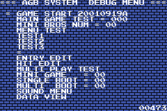
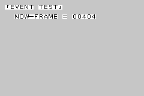
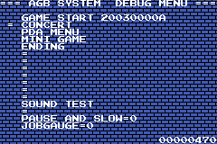
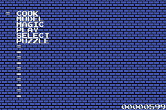
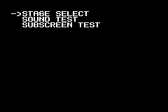
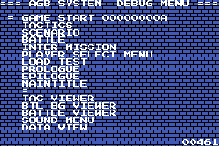
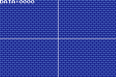

Debug Menu Re-Enablement Patches (.ips)
gbakit:
gbakit patch apply AF5E-debug.ips original.gba patched-debug.gbaBlender Bros. (USA) Interactive Verified
Patch scene dispatcher at 0x080048c2 (ldr r0,[r4] -> movs r0,#44) after boot init to select jump-table index 43 (0x080049a4 -> AGB SYSTEM DEBUG MENU 0x08008fd9)
Download ABRE-debug.ips View Game Page
gbakit patch apply ABRE-debug.ips original.gba patched-debug.gba

Car Battler Joe (USA) Interactive Verified
Replace real scene descriptor table slot 0 (0x08375050, 12 bytes) with debug scene triplet {0x08039251, 0x080392d1, 0x080392e9}
Download ACBE-debug.ips View Game Page
gbakit patch apply ACBE-debug.ips original.gba patched-debug.gba

Cinnamoroll - Koko ni Iru yo (Japan) Interactive Verified
Patch scene dispatcher at 0x08005e7a (ldr r0,[r4] -> movs r0,#48) to select AGB SYSTEM DEBUG MENU
Download BPSJ-debug.ips View Game Page
gbakit patch apply BPSJ-debug.ips original.gba patched-debug.gba

Doubutsu-jima no Chobigurumi (Japan) Interactive Verified
Patch scene dispatcher at 0x0800599a (ldr r0,[r4] -> movs r0,#49) to select AGB SYSTEM DEBUG MENU
Download A8DJ-debug.ips View Game Page
gbakit patch apply A8DJ-debug.ips original.gba patched-debug.gba

Elemix! (Japan) Interactive Verified
Patch scene dispatcher at 0x080004ca (movs r0, #12 -> movs r0, #16) to select AGB SYSTEM DEBUG MENU
Download AEKJ-debug.ips View Game Page
gbakit patch apply AEKJ-debug.ips original.gba patched-debug.gba

Futari wa Pretty Cure - Arienaai! Yume no Sono wa Daimeikyuu (Japan) Interactive Verified
Patch initial scene descriptor literal at 0x08003d70 (0x0802ac3c -> 0x0802a714) to boot precure debug menu
Download BFPJ-debug.ips View Game Page
gbakit patch apply BFPJ-debug.ips original.gba patched-debug.gba

Hagane no Renkinjutsushi - Meisou no Rondo (Japan) Interactive Verified
Patch scene table at 0x0817D8A8 (slot 1) with slot 0 debug menu descriptor [DEBUG MENU] (16 bytes)
Download BHRJ-debug.ips View Game Page
gbakit patch apply BHRJ-debug.ips original.gba patched-debug.gba

Hagane no Renkinjutsushi - Omoide no Sonata (Japan) Interactive Verified
Patch boot scene selector at 0x0801d7d0 (movs r1, #68 -> movs r1, #0) to boot into scene 0 [DEBUG MENU]
Download BH2J-debug.ips View Game Page
gbakit patch apply BH2J-debug.ips original.gba patched-debug.gba

Kouchuu Ouja Mushiking - Greatest Champion e no Michi (Japan) Interactive Verified
Patch initial task spawn at 0x0800033a (movs r0, #21 -> movs r0, #6) to spawn debug menu process
Download BK6J-debug.ips View Game Page
gbakit patch apply BK6J-debug.ips original.gba patched-debug.gba

Shining Force - Resurrection of the Dark Dragon (USA) Interactive Verified
Replace scene-factory jump-table boot slots (0x0800b420 & 0x0800b424 -> bl 0x08002700) with DebugMenuScene constructor stub (0x0800b4cc -> bl 0x08000778)
Download AF5E-debug.ips View Game Page
gbakit patch apply AF5E-debug.ips original.gba patched-debug.gba

Super Robot Taisen A (Japan) Interactive Verified
Patch scene dispatcher at 0x08003832 (ldr r0,[r4] -> movs r0,#40) after boot init to select jump-table index 39 (0x080038f8 -> AGB SYSTEM DEBUG MENU 0x08006369)
Download ASRJ-debug.ips View Game Page
gbakit patch apply ASRJ-debug.ips original.gba patched-debug.gba

Super Robot Taisen D (Japan) Interactive Verified
Patch scene dispatcher at 0x08004cfa (ldr r0,[r4] -> movs r0,#49) to select jump-table index 48 (AGB SYSTEM DEBUG MENU at 0x08004d88)
Download A6SJ-debug.ips View Game Page
gbakit patch apply A6SJ-debug.ips original.gba patched-debug.gba

Super Robot Taisen R (Japan) Interactive Verified
Patch scene dispatcher at 0x08004d72 (ldr r0,[r4] -> movs r0,#49) to select jump-table index 48 (AGB SYSTEM DEBUG MENU at 0x08004e60)
Download AJ9J-debug.ips View Game Page
gbakit patch apply AJ9J-debug.ips original.gba patched-debug.gba

Ultra Keibitai - Monster Attack (Japan) Interactive Verified
Patch scene dispatcher at 0x08006bce (ldr r0,[r4] -> movs r0,#48) to select AGB SYSTEM DEBUG MENU
Download BUTJ-debug.ips View Game Page
gbakit patch apply BUTJ-debug.ips original.gba patched-debug.gba

Wanko Mix Chiwanko World (Japan) Interactive Verified
Patch scene table at 0x082B5098 (slot 10 [LOGO]) with slot 0 debug menu descriptor [DEBUG MENU] (16 bytes)
Download BWXJ-debug.ips View Game Page
gbakit patch apply BWXJ-debug.ips original.gba patched-debug.gba